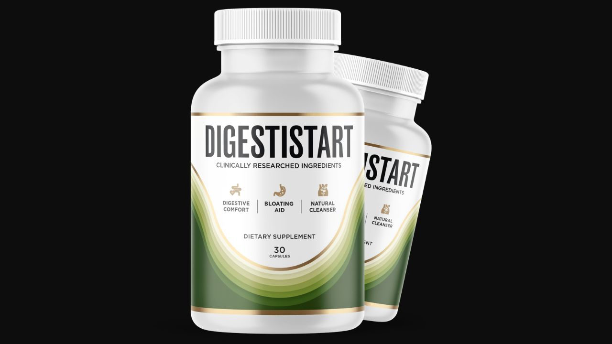

Health Reviews Labs investigated DigestiStart's 11-ingredient approach to digestive health — and why addressing motility, enzymes, microbiome, and inflammation simultaneously produces results that probiotics alone cannot.

11 Ingredients · 4 Gut Mechanisms · GMP-Certified · 60-Day Guarantee
→ Click Here for Official SiteChronic digestive dysfunction — bloating, constipation, post-meal heaviness — rarely has a single cause. Four interacting mechanisms typically drive it: sluggish gut motility (intestinal muscles don't propel food forward properly), enzyme deficiency (stomach and small intestine don't produce enough protease to break food down completely), microbiome imbalance (beneficial bacteria are outnumbered by pathogenic strains), and intestinal inflammation (the gut lining is irritated, perpetuating the other three problems). Addressing only one while the others remain dysfunctional produces limited and inconsistent results. This is why probiotics alone, or fiber supplements alone, work for some people and not for others — the mechanism they missed is still active.
Wild Yam's diosgenin relaxes intestinal smooth muscle spasm while supporting healthy muscle tone — addressing both under-contraction and spasm. Ginger's gingerols and shogaols are among the most studied prokinetics in botanical research, speeding gastric emptying and improving intestinal transit time. Magnesium Citrate provides gentle osmotic support maintaining appropriate colon hydration for smooth transit.
Bromelain from pineapple stem and Papain from papaya are both broad-spectrum proteolytic enzymes that supplement the body's own protease production. Incomplete protein breakdown in the small intestine creates fermentation substrates in the lower gut — the primary source of gas and bloating. Ensuring complete breakdown upstream prevents this.
Inulin provides fermentable prebiotic fiber that specifically feeds Bifidobacteria — the genus most associated with gut barrier integrity and reduced intestinal permeability. Psyllium husk adds soluble fiber that feeds beneficial bacteria while adding stool bulk. Poria Cocos beta-glucans provide prebiotic-like activity and documented anti-inflammatory effects on gut mucosa.
Schisandra's lignans reduce NF-kB inflammatory signaling in the gut lining — the pathway underlying IBS and IBD symptoms. Cistanche reduces intestinal oxidative stress. Peppermint Oil's L-menthol relaxes smooth muscle of the lower intestinal tract and has the strongest evidence base of any botanical for IBS symptom relief.
DigestiStart's 11-ingredient, 4-mechanism architecture is the most comprehensive digestive formula in the HRL catalog — addressing the biological complexity of gut dysfunction that single-ingredient or single-mechanism supplements miss. Wild Yam + Ginger prokinetics, Bromelain + Papain enzyme support, Inulin + Psyllium prebiotic, and Schisandra + Peppermint anti-inflammatory work through genuinely complementary pathways. Non-habit-forming, GMP-certified US facility, 60-day guarantee. For adults with chronic digestive symptoms who've had limited success with probiotics alone, this 4-mechanism coverage is the meaningful difference.
Enzyme and motility components begin working — food moves better and breaks down more completely.
Microbiome shifts toward Bifidobacteria dominance as prebiotic components establish — gas production from fermentation decreases.
Anti-inflammatory compounds establish ongoing gut lining protection — symptoms related to irritation and sensitivity improve consistently.
4-Mechanism Gut Formula · 11 Ingredients · GMP-Certified · 60-Day Guarantee
→ Click Here for Official Site